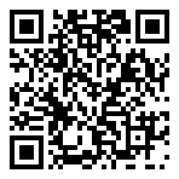
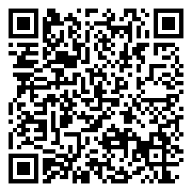

Support the project
The app is free and has no ads. If you find it useful, you can make a donation of any amount to Filippo, who created it. Every contribution, however small, helps keep it running and improve it. Thank you!
With PayPal
- Tap the "Donate with PayPal" button below.
- Sign in to your PayPal account (the PayPal app opens if it is installed).
- Enter the amount you like.
- Confirm the payment.

On a computer? Scan this QR code with your phone camera.
By bank transfer
Quick way: QR code
If your banking app lets you pay a transfer by scanning a QR code, scan this code: beneficiary, IBAN and reference are filled in automatically. You only need to enter the amount.

Not all banks offer this feature. If yours does not, use the method below.
Manual way
- Open your banking app or website and choose "New transfer" (SEPA transfer).
- In the beneficiary field, paste the name:
BeneficiaryFilippo Picchiarelli
- In the IBAN field, paste this code:
IBANIT67 U036 6901 6009 1676 6231 291
- Enter the amount you like.
- In the reference (payment description), paste:
ReferenceDonazione app Garmin
- Check the details and confirm the transfer.
The BIC/SWIFT code is usually not needed for euro (SEPA) transfers. Any transfer fees depend on your bank.
Thank you so much for your support!